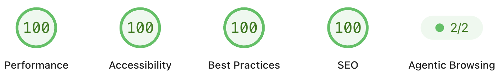
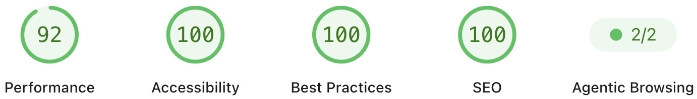

Why this exists
A performance audit isn't one number. It's four separate categories - Performance, Accessibility, Best Practices, and SEO - and a page can look completely fine while quietly failing several of them at once. This is the pass that took this site's own scores from a mixed bag to 100 across the board on desktop and 94 Performance with 100 on the rest on mobile, not from one large fix, but from clearing a list of small, specific ones.
None of the individual issues were dramatic. That's exactly why they were worth writing down - the kind of thing that's easy to skip past during a normal review, and easy to miss entirely without checking each category on its own terms.
The starting point
Nothing was broken in an obvious sense. Pages loaded, forms submitted, nothing was visibly on fire. But a handful of things had accumulated across different pages and different points in time: images stretching or squishing at certain widths, some pages missing a landmark region entirely, interactive elements with a real clickable area smaller than they looked, alt text that was either absent or generic enough to be nearly useless, and a third-party embed that behaved differently in production than it did anywhere it had actually been tested.
Each of those is a small deduction on its own. Together, they were enough to keep every category short of full marks.
What was actually happening
- Several images had a fixed height set without a matching width, or vice versa, so the browser fell back to stretching or squishing them instead of preserving their real proportions.
-
A number of pages had no
<main>landmark wrapping their primary content at all, leaving assistive technology with no reliable way to jump past the header and footer to the actual page. - Several links and icons looked fine visually but had a real clickable area under the accepted minimum, usually because an inline link wasn't expanding to contain a taller image or icon sitting inside it.
- A handful of images either had no alt text, or had the exact same generic alt text copy-pasted across several visually different images - which, for anyone using a screen reader, is close to the same problem as having no alt text at all.
- A third-party embed loaded correctly in local testing but was silently blocked in production by a stricter policy header the local environment didn't send - a gap that only became visible once production and local were actually compared side by side.
None of these showed up as a single failing test. Each one lived in a different category, which is exactly why a page can look fine at a glance and still leave points on the table in four different places at once.
The decision log
The individual fixes were small. Getting through all of them required treating each category as its own pass rather than one general "cleanup," since the causes and the fixes for each one had almost nothing in common.
Decision 1: Fix the layout bugs at the CSS level, not per page
The stretched and squished images all traced back to the same
handful of causes - a missing object-fit rule, an
inline size override with no matching dimension, or a grid column
that didn't actually shrink below its content's minimum width.
Rather than patch each affected page individually, the fix went
into the shared stylesheet once, so any page using that same
pattern was covered by the same change.
Decision 2: Add landmarks without guessing at page structure
Adding a missing <main> region isn't just
wrapping the whole page - it means correctly excluding the header,
navigation, and footer, and not adding a second one where a page
already had it. Every page got checked individually against that
rule rather than applying one template blindly across all of them.
Decision 3: Treat "looks fine" and "is a real target" as separate
questions
The undersized click targets weren't a font-size or color problem - they were a box-sizing problem. An inline link wrapping a taller image or icon doesn't automatically expand to contain it, so the visible content looked correct while the actual clickable area was only as tall as the surrounding text. The fix was sizing and spacing only - padding, margin, and display changes - never touching layout or color.
Decision 4: Alt text needed a second pass, not just a presence
check
A first pass confirmed every image had an alt attribute present. That's not the same as confirming it was correct. Several images shared identical, generic alt text that described the brand rather than what was actually different about each image - which meant the presence check alone would have missed the real problem entirely.
Decision 5: Confirm any embed against the same policy production
enforces
A third-party embed worked fine in local testing because local testing didn't send the same content security policy production does. Once that difference was identified, the fix was to stop depending on the external script entirely and recreate the small amount of styling it provided directly, so the result no longer depended on a policy exception staying in place.
Before and after
Before
- Images stretching or squishing at certain widths
- Several pages missing a landmark region entirely
- Click targets smaller than they visually appeared
- Generic alt text reused across different images
- An embed that passed in preview and failed in production
After
- Proportions preserved through a shared stylesheet fix
- Every page carrying exactly one correctly scoped landmark
- Click targets matching their visible size
- Alt text describing what's actually different per image
- Production-safe styling with no external dependency
The scores
Desktop landed at 100 Performance, 100 Accessibility, 100 Best Practices, and 100 SEO. Mobile landed at 94 Performance, with Accessibility, Best Practices, and SEO all also at 100.
Desktop

View full report →
Mobile

View full report →The mobile Performance score is the one that stayed short of full marks, which tracks - mobile carries real constraints around processing power and connection speed that a fixed desktop environment doesn't, and closing that last gap further would mean trading against those constraints rather than fixing another bug.
What this actually took
None of these fixes were individually complex. What took the time was treating four different categories as four different problems instead of one general pass, and re-checking each category on its own terms rather than assuming a fix for one issue had incidentally covered another.
The bigger takeaway wasn't the specific score. It was that a presence check and a correctness check are different questions - an image having alt text isn't the same as that alt text being useful, and a script loading in one environment isn't the same as it loading in every environment that matters.
Frequently asked questions
Does a perfect score mean a site is fully accessible?
No. An automated audit checks what can be checked automatically - things like contrast, landmarks, alt text presence, and target sizing. It can't evaluate whether alt text is actually accurate, or whether a page makes sense navigated entirely by keyboard or screen reader. A high score is a strong signal, not a guarantee.
Why would a script work in preview but fail in production?
Local and preview environments often don't send the same security headers a production environment does. A content security policy that restricts which external scripts are allowed to run is a common example - it's invisible until someone checks production's actual response headers against what loaded locally.
Is this a one-time pass or something that needs repeating?
Both. The specific issues here are fixed and shouldn't reappear on their own, but new pages and new content introduce new chances for the same categories of mistakes - a missing landmark on a new page, an image added without matching dimensions. The value of documenting the pass is having a checklist for the next one.
Not sure what your own site's scores are actually hiding?
A short conversation is usually enough to tell whether there's a quick answer or something deeper worth tracing.